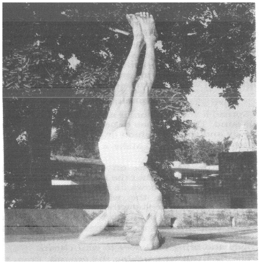
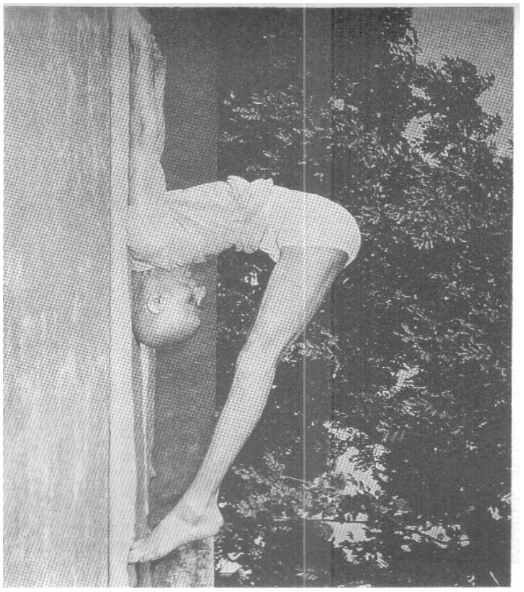
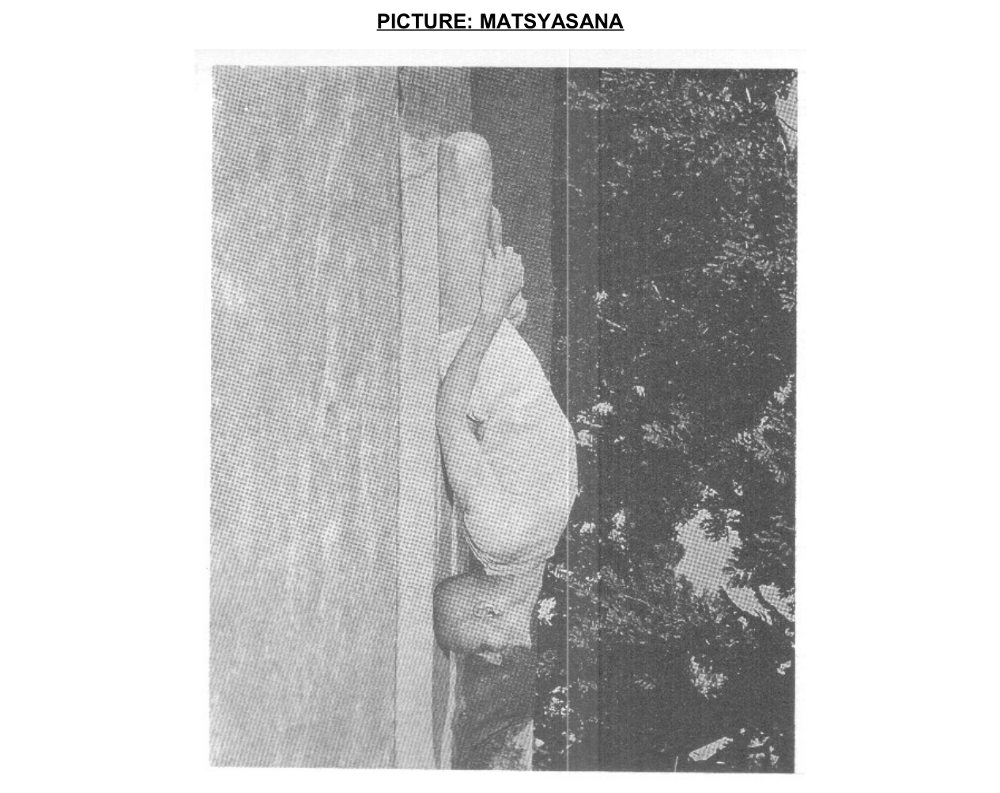
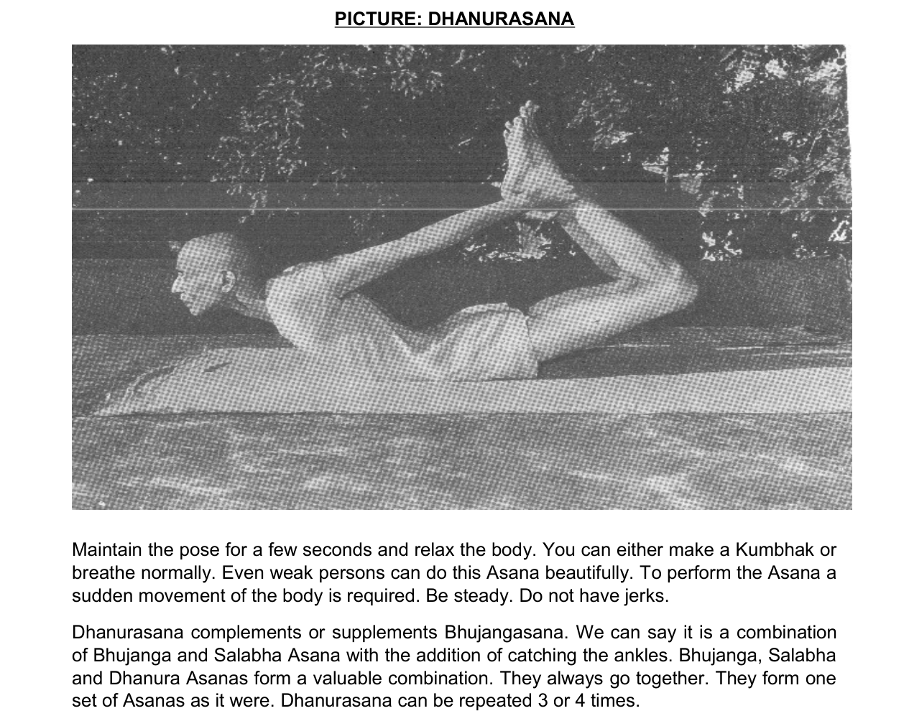
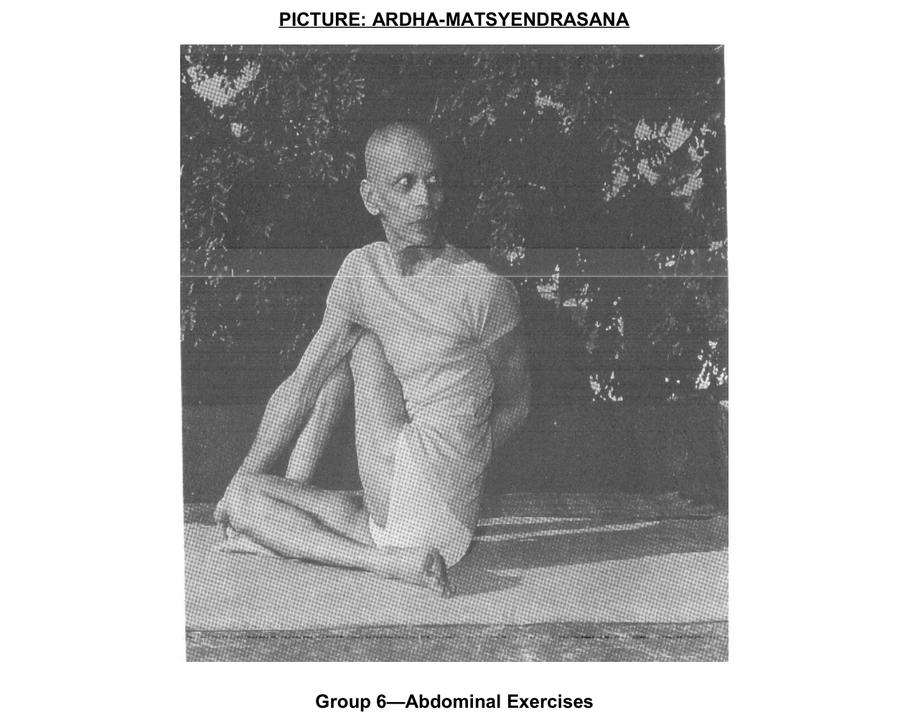

朝のシーケンス・修正版
シヴァナンダ『ハタ・ヨーガ』の基本課程より ── 全ポーズ鼻呼吸・ keep は呼吸数で数える（1呼吸約6秒）
一オンスの実践は一トンの理論に勝る ── 中断するな。これだけが規律である。
準 備
0
頭立ち（壁利用）
SIRSHASANA

10呼吸
壁可・夏は短く。降りたら直立で数秒休む
アーサナ（各群から選択 ── 後屈を補強した構成）
1
ヨガ・ムドラー
YOGA MUDRA

10呼吸
蓮華座で後ろ合掌・前に倒れる。腹部の群
2
蓮華肩立ち
URDHVA PADMASANA

10呼吸
逆転の群・甲状腺と頭部の血流
3
鋤のポーズ
HALASANA

10呼吸
前屈の群・背骨と腰の柔軟
4
肩立ちのポーズ
SARVANGASANA

20呼吸〜
直後に必ず魚（肩立ち時間の半分）
5
魚のポーズ
MATSYASANA

10呼吸
後屈の群・肩立ちの締め
6
車輪のポーズ
CHAKRASANA

5呼吸×2回
後屈の群・背骨を弓のように反らす。無理なら橋（セト・バンダ）で代用可
7
蛇のポーズ
BHUJANGASANA

5呼吸×2回
後屈の群・胸を開く
8
弓のポーズ
DHANURASANA

5呼吸×2回
後屈の群・腹と背中を両方鍛える
9
長座の前屈
PASCHIMOTTANASANA

10呼吸
前屈の群・後屈の後の中和
10
手を足へ
PADAHASTHASANA

10呼吸
前屈の群（立位）
11
半魚王のひねり
ARDHA MATSYENDRASANA

左右各10呼吸
捻りの群・後屈と前屈の間の背骨の正常化
呼吸法（テキストで ── 呼吸数・ポンピング数で数える）
12
カパーラバーティー（ゆっくり）
KAPALABHATI
20ポンピング
準備浄化・体質に不要なら飛ばしてよい（原典2.21の定め）
13
スクハ・プールヴァカ
SUKHA PURVAK
10回（左右往復で1回）
クンバカ中ムーラ＋腹部の締め。右鼻詰み時は無理せず切り上げ
14
バストリカー
BHASTRIKA
3セット（20ポンピング＋止息）
各セット間は自然呼吸で休む。汗は拭かず体にすり込む
15
ウジャイー瞑想
UJJAYI
20分
呼吸音と眉間に集中。蓮華または楽な座法で
締 め
16
屍のポーズ
SAVASANA

20〜30呼吸
全運動の後に必ず・完全弛緩
蓮華座
PADMASANA

瞑想の座
呼吸法・瞑想はこの座で